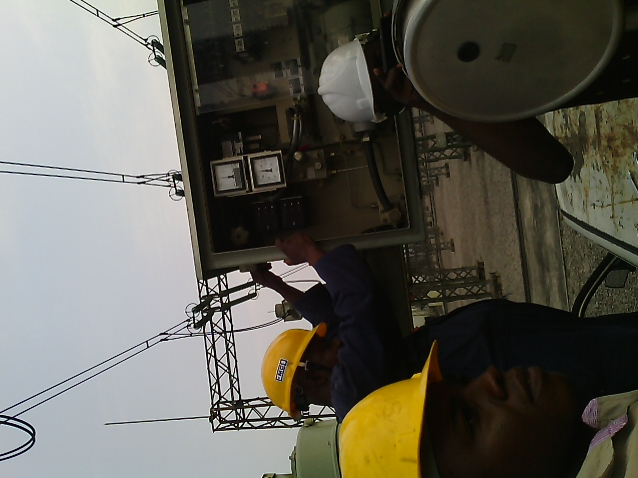
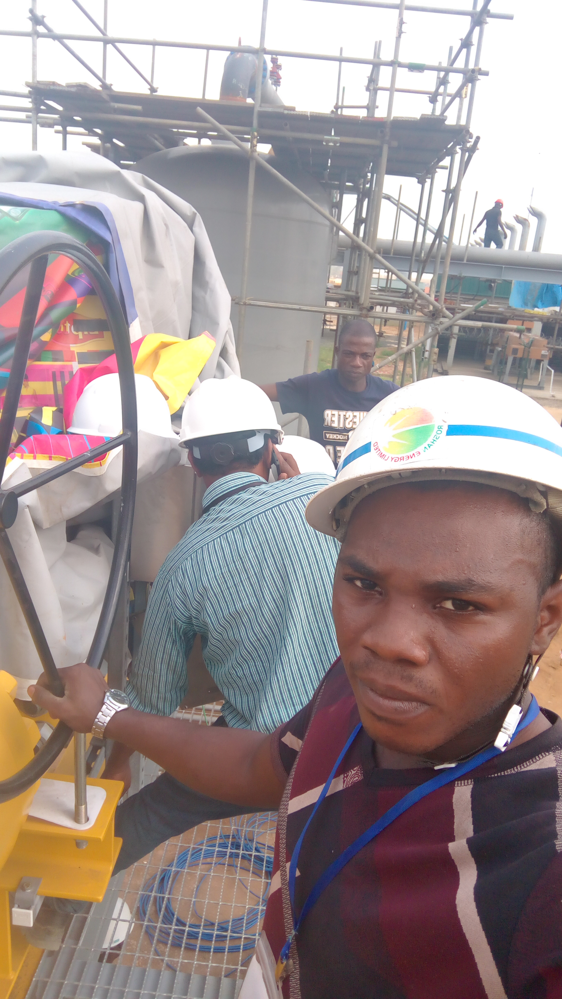

No 14, Oyekan Street, Off Command Road, Ipaja, Alimosho L.G.A,Lagos State.
Mobile Contact: 07063063342
E-mail:goodnewsdey@gmail.com
A graduate in electrical electronic engineering with more than 2 years of
transferable experience and positive attitude with excellent results. Analytical,
technical, software and administrative skills in different engineering related
settings.
Date of Birth: 14th Feb 1990.
Sex: Male
Local Government Area: Isoko South
Community: Emede
State of Origin: Delta
Nationality: Nigerian
Marital Status: Single
Organization: Transmission Company of Nigeria (TCN)(August 2013-Feburary2014)
Organization: Transcorp Ughelli Power Limited(July 2013-December 2013)
During my six months industrial attachment program I was trained in the following
department:
Organization: Eddy Best Electrical services(April-September 2015)
Organization: Roshan Energy Ltd(December 2017)

University of Port Harcourt(May 2015)
B.Eng. Electrical Electronic Engineering
(Second Class lower division)
Govt. Comm. College(GVTC) Makarfi.(June 2008)
Senior Secondary Certificate Examination
(National Examination Council)
Fountain Group of Schools(May 2002)
Primary School Leaving Certificate
Referee:
Engr. Wilfred Asonmwonriri
Transmission Company of Nigeria (TCN)
Ughelli subregion, Delta State.
08037921342
Mrs Akinlabi Olufumilayo
General hospital Ikenne
Ikenne, Ogun State.
07089736502